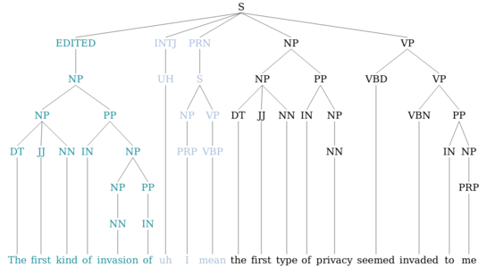

<div class="row">
  <!-- <div class="col-lg-12 text-xs-center">
    <h3 class="section-heading">Publications</h3>
  </div> -->
  <div class="col-lg-12">
    <ul class="list">
	        <li class="pub-list-item" itemscope itemtype="http://schema.org/CreativeWork">
  <!-- <i class="fa-li fa fa-file-text-o pub-icon" aria-hidden="true"></i> -->
  <!--  -->
  <!--  -->
  <a class="navbar-brand" href="/">
    <div class="logo-ima">
          
    </div>
  </a>

  <span class="article-title-simple" itemprop="name">
    <a href="https://arxiv.org/abs/1908.02943" itemprop="url">Towards Generating Stylized Image Captions via Adversarial Training</a>
  </span>

  <div class="pub-authors" itemprop="author">
    
     Omid Mohamad Nezami, Mark Dras, Stephen Wan, Cecile Paris, Len Hamey 
    
  </div>

  <div class="pub-publication">
    
    <em>Proceedings of the 2019 Pacific Rim International Conference on Artificial Intelligence (PRICAI 2019).</em> Fiji.
    
  </div>

  <p>

<a class="btn btn-primary btn-outline btn-xs" href="https://arxiv.org/abs/1908.02943">
  ABSTRACT
</a>

<a class="btn btn-primary btn-outline btn-xs" href="https://arxiv.org/pdf/1908.02943/1908.02943.pdf">
  PDF
</a>
	  
<!-- <a class="btn btn-primary btn-outline btn-xs" href="">
  BibTeX
</a> -->

<a class="btn btn-primary btn-outline btn-xs" href="https://github.com/omidmnezami/Style-GAN">
  CODE
</a>

</p>
</li>
        <li class="list-panel" itemscope itemtype="http://schema.org/CreativeWork">
        <b>Improving Disfluency Detection by Self-Training a Self-Attentive Model</b>
        <br/>
        <b>Paria Jamshid Lou</b> and Mark Johnson<br/>
        In <i>Proceedings of the 58th Annual Meeting of the Association for Computational Linguistics (ACL)</i>, Online. pages 3754–3763, 2020.<br/>
       <a class="btn btn-primary btn-outline btn-xs" href="https://www.aclweb.org/anthology/2020.acl-main.346" target="_blank"><i class="fa fa-external-link"></i>PDF</a> <a class="btn btn-primary btn-outline btn-xs"  href="https://github.com/pariajm/joint-disfluency-detection-and-parsing" target="_blank"><i class="fa fa-external-link"></i>Code</a><br/>

      </li>
      <li class="list-panel">
        <b>Neural Constituency Parsing of Speech Transcripts</b>
        <br/>
        <b>Paria Jamshid Lou</b>, Yufei Wang and Mark Johnson<br/>
        In <i>Proceedings of the 2019 Annual Conference of the North American Chapter of the Association for Computational Linguistics (NAACL)</i>, Minneapolis, Minnesota. pages 2756–2765, 2019.<br/>
       <a class="btn btn-primary btn-outline btn-xs" href="https://www.aclweb.org/anthology/N19-1282/" target="_blank"><i class="fa fa-external-link"></i>PDF</a> <a class="btn btn-primary btn-outline btn-xs"  href="https://github.com/pariajm/joint-disfluency-detection-and-parsing/tree/naacl2019" target="_blank"><i class="fa fa-external-link"></i>Code</a><br/>

                    
          </li>
      <li class="list-panel">
        <b>ShEMO: A Large-scale Validated Database for Persian Speech Emotion Detection</b>
        <br/>
        Omid M. Nezami, <b>Paria Jamshid Lou</b>, Mansoureh Karami<br/>
        <i>Journal of Language Resources and Evaluation 53(1): 1-16</i>, 2019.<br/>
        <a class="btn btn-primary btn-outline btn-xs" href="https://link.springer.com/article/10.1007/s10579-018-9427-x" target="_blank"><i class="fa fa-external-link"></i>PDF</a> <a class="btn btn-primary btn-outline btn-xs" href="https://github.com/pariajm/persian-emotional-speech-database-shemo" target="_blank"><i class="fa fa-external-link"></i>Code</a><br/>
      </li>
      <li class="list-panel">
        <b>Disfluency Detection using Auto-Correlational Neural Networks</b>
        <br/>
        <b>Paria Jamshid Lou</b>, Peter Anderson and Mark Johnson<br/>
        In <i>Proceedings of the 2018 Conference on Empirical Methods in Natural Language Processing (EMNLP)</i>, Brussels, Belgium. pages 4610–4619, 2018.<br/>
        <a class="btn btn-primary btn-outline btn-xs" href="https://www.aclweb.org/anthology/D18-1490/" target="_blank"><i class="fa fa-external-link"></i>PDF</a> <a class="btn btn-primary btn-outline btn-xs"  href="https://github.com/pariajm/ACNN" target="_blank"><i class="fa fa-external-link"></i>Code</a><br/>
      </li>
      <li class="list-panel">
        <b>Disfluency Detection using a Noisy Channel Model and a Deep Neural Language Model</b>
        <br/>
        <b>Paria Jamshid Lou</b> and Mark Johnson<br/>
        In <i>Proceedings of the 55th Annual Meeting of the Association for Computational Linguistics (ACL)</i>, Vancouver,
Canada. pages 547-553, 2017.<br/>
        <a  class="btn btn-primary btn-outline btn-xs" href="https://www.aclweb.org/anthology/P17-2087/" target="_blank"><i class="fa fa-external-link"></i>PDF</a><br/>
      </li>
      <li class="list-panel">
        <b>Dynamic Diversity Enhancement in Particle Swarm Optimization (DDEPSO) Algorithm for Preventing from Premature Convergence</b>
        <br/>
        Omid M. Nezami, Anvar Bahrampour and <b>Paria Jamshid Lou</b><br/>
        <i> Procedia  Computer  Science  24: 54–65 </i>, 2013.<br/>
        <a  class="btn btn-primary btn-outline btn-xs" href="https://www.sciencedirect.com/science/article/pii/S1877050913011691" target="_blank"><i class="fa fa-external-link"></i>PDF</a><br/>
      </li>

 
    </ul>
    
  </div>
  
</div>
